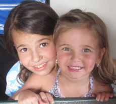
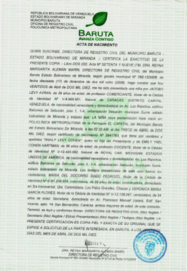

Mi hermanita, Analy Levy
Mi hermanita, nació cuando yo tenía casi siete años, el 13 de abril del 2010, recuerdo ese día con especial cariño ya que del nacimiento de mi otros hermanos no recuerdo nada. Ese día yo fui al colegio como cualquier otro día, mi maestra Andrea (la cual me consentía mucho) no paraba de preguntarme cosas sobre la bebé: ¿estás emocionada de ser hermana mayor? ¿Cómo quieres que se llame? ¿La vas a cargar y jugar con ella? Así paso todo el día hasta que llegó la hora de irnos y mi papá no llegaba. Yo no sabía por qué, así que lo llamaron para ver qué pasaba. Cuando mi maestra volvió me dijo; “tu papá ya viene esta tarde porque tu mamá esta en trabajo de parto” efectivamente poco después llegó mi papá y me llevó a la clínica donde conocí a mi hermanita.
Hay una anécdota con respecto al nombre de Analy: Mi mamá siempre quiso tener cuatro hijos mientras que mi papá quería tener tres. Mi mamá se estaba cuidando y decidió que se iba a dejar de cuidar para tener el cuarto hijo que ella quería. Mi papá al enterarse de esto se puso bravo y le dijo a mi mamá que él no quería tener más hijos así que tenía que empezar a cuidarse. Mi mamá dijo que estaba bien, pero que ya no podía tomarse las pastillas este mes así que el mes siguiente comenzaría. Como ella si quería tener más hijos decidió rezar: D-os tengo sólo esta oportunidad para quedar embarazada, sino, no creo que pueda tener más hijos, muéstrame que ese es tú deseo también. Como sabemos mi mamá si tuvo otro hijo (bueno dos más), gracias a este acto mi mamá decidió llamarla Ana-ly que se traduce: me respondió, ya que D-os escuchó sus plegarias y le respondió teniendo un hijo.
Mi mamá disfruto mucho con Analy, ya que nosotros ya éramos lo suficientemente grandes para ayudarla, nosotros la cargábamos, bañábamos, y no parábamos de jugar con ella. De hecho, justo por el hecho de ser grandes, cuando salíamos en familia mi papá siempre estaba con nosotros los grandes (Vivi, Arie y yo) y mi mamá se quedaba con Analy. En la playa, en los viajes; siempre mi mamá hacia cosas con Analy y mi papá con nosotros. Por eso Analy y mi mamá son tan unidas.
Analy fue una bebé muy buena, casi no lloraba y se la pasaba riéndose, ella antes de caminar aprendió a bailar. Eso se lo debemos a la señora que trabajaba con nosotros en ese momento (Yesenia) que no paraba de ponerle HTV, así que Analy se la pasaba bailando.
Analy fue una bebe muy bonita, recuerdo que siempre nos paraban para verla y nos decían lo bella que era. Cuando era más pequeña tenía unos ojos azules impresionantes.
Analy es una niña muy alegre y desenvuelta. Mi mamá dice que era una niña muy fácil, pues todo le gustaba hacer, no pedía nada y jugaba siempre ya sea sola o acompañada, y además la ENCANTA ordenar, ella sino está jugando o bailando está ordenando sus juguetes (aunque probablemente siempre la verás bailando). Hoy en día sigue siendo así, si mi cuarto esta desordenado solo tengo que llamar a Analy y ella me lo ordena.
Hay otra anécdota graciosa sobre Analy. Cuando fuimos a los parques de Disney en Orlando, Analy tendría 4 o 5 años y ella se portó súper bien, pues a pesar que no podía montarse en muchas atracciones, se quedaba sentadita en su coche acompañada por mi mamá y nunca se quejaba de nada, además a diferencia de nosotros los grandes, ella nunca pedía nada. En una ocasión ella vio una muñeca de Mini y la empezó a abrazar, mi mamá quiso comprársela ya que no había pedido nada en todo el viaje. Mi mamá le preguntó si la quería y ella asintió. Era muy tarde ya de noche y Analy estaba ya medio dormida, así que mi mamá en vez de comprarle el peluche que ella eligió, lo cambió por otro peluche idéntico pero más chiquito, pero que era más barato (pensó que la niña ni se enteraría).A la mañana siguiente cuando se levanta Analy, ve su peluchito y lo primero que dice: “Uy que le pasó a Mini que se achicó” Todos nos echamos a reír por el cuchi comentario de Analy.
Mi hermana ha estudiado toda su vida en el Moral y Luces Herzl Bialik, ella ama su colegio, le encanta educación física porque le gusta hacer ejercicio y le encanta estar corriendo por todos lados, también computación porque puede jugar con las computadoras.
Analy, forma parte del equipo de gimnasia y por supuesto está en el grupo de bailes Israelíes, y en sus tiempos libres se la pasa dibujando, esa es su actividad preferida.
Analy tiene 8 años y todos la queremos mucho.

DOCUMENTOS
